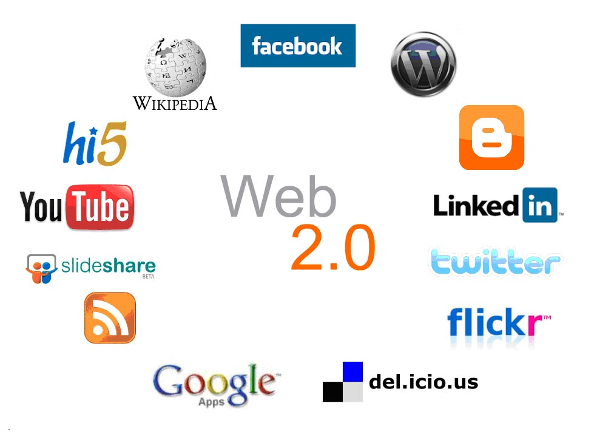

2004 - Web 2.0
Internet Interactivo y Participativo

Web 2.0 - Los usuarios se convierten en creadores de contenido
¿Qué es la Web 2.0?
El término Web 2.0 fue popularizado por Tim O'Reilly en 2004
durante una conferencia. Describe la transición de Internet de páginas estáticas de solo lectura
a plataformas dinámicas e interactivas donde los usuarios pueden crear, compartir y colaborar.
No es una nueva tecnología, sino un nuevo paradigma de cómo usamos Internet.
📝 De Lectores a Creadores
Web 1.0: Solo leer
Web 2.0: Leer + Escribir + Compartir
|
Web 1.0 vs Web 2.0
Para entender la Web 2.0, es importante compararla con la Web 1.0:
| Web 1.0 (1990-2004) |
Web 2.0 (2004-presente) |
Características:
- Páginas estáticas (HTML básico)
- Contenido de solo lectura
- Sitios personales aislados
- Navegación pasiva
- Webmasters crean contenido
- Directorios (Yahoo!)
|
Características:
- Aplicaciones web dinámicas
- Contenido generado por usuarios
- Redes y comunidades
- Participación activa
- Usuarios crean contenido
- Motores de búsqueda (Google)
|
Ejemplos de Transformación Web 1.0 → Web 2.0
| Categoría |
Web 1.0 |
Web 2.0 |
| Enciclopedias |
Britannica Online |
Wikipedia |
| Publicación |
Páginas personales |
Blogs (WordPress, Blogger) |
| Taxonomía |
Directorios |
Etiquetas (Tags, Hashtags) |
| Contenido |
Publicación |
Participación |
Tecnologías que Hicieron Posible Web 2.0
Varias tecnologías convergieron para hacer posible la Web 2.0:
Tecnologías Clave:
- AJAX: Permite actualizar partes de una página sin recargarla completamente
- RSS: Suscripción a actualizaciones de contenido
- APIs: Permiten que aplicaciones compartan datos entre sí
- JavaScript avanzado: Interfaces más ricas e interactivas
- CSS3: Diseños más atractivos y dinámicos
- Servicios web: Comunicación entre diferentes plataformas
|
Dato técnico: AJAX (Asynchronous JavaScript and XML)
revolucionó las aplicaciones web. Google Maps (2005) y Gmail (2004) fueron pioneros
en usar AJAX, demostrando que las aplicaciones web podían ser tan rápidas como
las aplicaciones de escritorio.
|
Plataformas Emblemáticas de Web 2.0
Estas plataformas definen lo que es la Web 2.0:
| Plataforma |
Año |
Aporte a Web 2.0 |
| Wikipedia |
2001 |
Conocimiento colaborativo, cualquiera puede editar |
| Blogger |
1999 |
Democratización de la publicación online |
| Flickr |
2004 |
Compartir fotos con etiquetas y comentarios |
| YouTube |
2005 |
Cualquiera puede ser creador de videos |
| WordPress |
2003 |
Blogging profesional accesible para todos |
| Digg/Reddit |
2004/2005 |
Contenido curado por la comunidad (upvotes/downvotes) |
Principios de la Web 2.0
Tim O'Reilly definió varios principios fundamentales de la Web 2.0:
Los 7 Principios de Web 2.0:
- La Web como plataforma: Aplicaciones que funcionan completamente en el navegador
- Aprovechamiento de la inteligencia colectiva: El contenido mejora con más usuarios
- Gestión de bases de datos: Los datos son el nuevo "Intel Inside"
- Fin del ciclo de actualizaciones: Software en constante evolución (beta perpetuo)
- Modelos ligeros de programación: APIs abiertas y servicios reutilizables
- Software no limitado a un dispositivo: Acceso multiplataforma
- Experiencias enriquecedoras del usuario: Interfaces dinámicas e intuitivas
El Concepto de "Beta Perpetuo"
En la Web 2.0, las aplicaciones están en constante desarrollo. A diferencia del
software tradicional que se lanzaba en "versiones" (1.0, 2.0), las aplicaciones web se actualizan
continuamente. Gmail estuvo en "Beta" durante 5 años, recibiendo mejoras constantes.
El Usuario Como Creador
El cambio más significativo de la Web 2.0 fue convertir a los usuarios de consumidores pasivos
en creadores activos:
Formas de Participación del Usuario:
- Blogs: Publicar pensamientos e ideas
- Comentarios: Opinar en artículos y publicaciones
- Wikis: Crear y editar conocimiento colaborativamente
- Videos: Subir contenido audiovisual (YouTube)
- Fotos: Compartir imágenes (Flickr, Instagram)
- Calificaciones: Evaluar productos, servicios, contenido
- Etiquetas (Tags): Organizar contenido de forma colaborativa
|
📊 Estadística Impactante:
En YouTube se suben más de 500 horas de video por minuto.
Esto solo es posible porque la Web 2.0 convirtió a millones de personas
en creadores de contenido.
|
Impacto de la Web 2.0
La Web 2.0 transformó completamente cómo interactuamos con Internet:
Cambios Culturales y Sociales:
- Periodismo ciudadano: Cualquiera puede reportar noticias
- Educación abierta: Recursos educativos gratuitos (Khan Academy, Coursera)
- Economía colaborativa: Uber, Airbnb, plataformas P2P
- Crowdsourcing: Solucionar problemas con la ayuda de multitudes
- Influencers: Nuevas celebridades creadas por usuarios
Hacia la Web 3.0
Actualmente se habla de la Web 3.0, la siguiente evolución que promete
ser semántica, descentralizada y basada en blockchain. Pero todo comenzó con la Web 2.0
que democratizó Internet.
| Evolución |
Característica Principal |
| Web 1.0 |
Solo lectura (Read) |
| Web 2.0 |
Lectura + Escritura (Read-Write) |
| Web 3.0 |
Lectura + Escritura + Propiedad (Read-Write-Own) |
📚 Enlaces Relacionados
Para más información sobre Web 2.0, consulta:
|